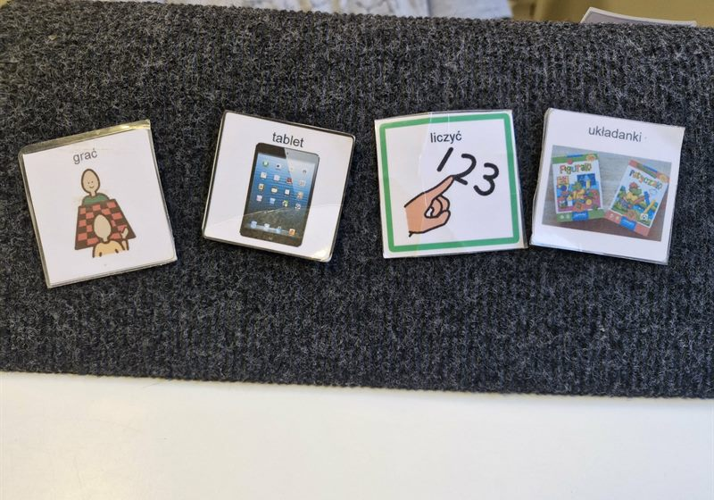

Oferta
Prowadzę zajęcia specjalistyczne rozwijające umiejętności komunikacyjne przy pomocy metod AAC — czyli takich, które umożliwiają porozumiewanie się osobom nieposługującym się mową werbalną albo używającym jej w ograniczonym stopniu.

Punkt wyjścia dla całej dalszej pracy. Sprawdzam, jak dziecko porozumiewa się dziś — także wtedy, gdy nie mówi ani słowa — i co jest dla niego realnym następnym krokiem.
Nie ma jednego AAC dla wszystkich. System dobieramy pod konkretną osobę — jej możliwości ruchowe, wzrok, tempo pracy i to, o czym naprawdę chce mówić.
Wykonuję je sama, pod konkretne dziecko — nie gotowce ze sklepu.
Dla osób, dla których symbole na papierze to za mało albo za wolno.
Jako uzupełnienie terapii logopedycznej, nie zamiast niej. AAC nie blokuje mowy — w wielu przypadkach pomaga jej się pojawić.
Stymulowanie rozwoju poznawczego i nauka czytania z wykorzystaniem wizualnych technik wspierających komunikację i rozumienie.
Dla dzieci, u których trudne zachowania wiążą się z zaburzeniami komunikacji i brakiem mowy, a także z kłopotem w respektowaniu norm i zasad społecznych.
Najlepszy system komunikacji jest bezużyteczny, jeśli nikt w otoczeniu dziecka nie umie z niego korzystać. Uczę tego rodziców, rodzeństwo, nauczycieli i wszystkich, którzy biorą udział w rozmowie z dzieckiem.
Spotkanie bez dziecka — na pytania, przegląd opinii z poradni albo ustalenie, jak rozmawiać ze szkołą. Także dla nauczycieli, którzy mają w grupie dziecko niemówiące i nie wiedzą, jak zacząć.
Opisz krótko, co dzieje się z Twoim dzieckiem. Odezwę się i wspólnie ustalimy, od czego zacząć.
Umów konsultację